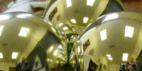
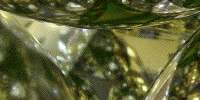
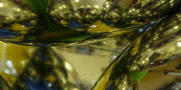
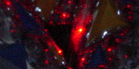

| First, assemble the base of the tetrahedron |  |
| Now, place the fourth ornament on the top of the base, and look at the gap between the ornaments. |  |
| Use folders to differentiate regions by color |  |
| Use a laser pointer to investigate the basin boundaries. |  |
Return to Optical Gasket Lab.